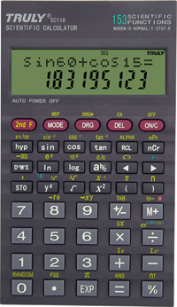
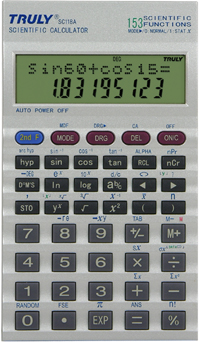

Truly SC-118 / SC-118A簡介
|  |  |
| Truly SC-118 | Truly SC-118A |
Truly SC-118及Truly SC-118A為會考准用計數機，兩部計算機除顏色不同外，功能及用法完全一樣，使用高級算式順序輸入法(A.D.A.L.)，即是將計算式依書寫的順序輸入計算機。功能方面比常用會考計算機CASIO fx-3650P、fx-50F及SHARP EL-506V明顯遜色得多，沒有程式功能，只有基本的科學計算功能，一個獨立數字記憶及二個暫存數字記憶，即使與功能較少及平價的SHARP EL-509V或CANON F-604比較，功能亦略為遜色，沒有好像EL-509V的線性回歸功能或F-604的基數及複數功能。較大的優點可以說是SC-118A / SC-118的售價較平價的509V及F604還要平宜一點，大約只要六十幾元就可以買到。
現時可以在香港購買Truly SC-118及SC-118A的地點非常少，使用這兩部計算機的人亦非常少，比EL-509V及F-604更少，再者Truly這兩部計算機的功能並不吸引，再加上最近Truly新推出的SC185(2007年4月)計算機再被發現有其它問題，實在使人對Truly計算機信心下降。雖然這兩部計算機略為平宜一點，但亦不建議大家購買。